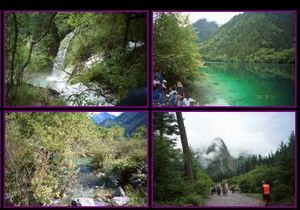
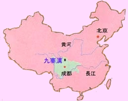
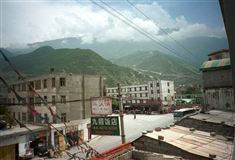
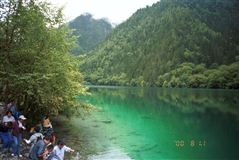

中国の旅行マニアが口を揃えて絶賛する九寨溝と黄龍、九寨溝は、１９７０年代に森林伐採の労働者によって偶然発見され、今や中国では有名な観光地となっています。日本ではほとんど知られていません。いずれも３０００メートル前後の高地、四川省の秘境森林の奥深くに極色彩の湖が点在しています。湖畔にはチベット族が小さい集落を作って旅情を添えています。
女神が天上の世界から落とした鏡が108つに砕けて出来たと伝えられる九寨溝の湖、成都の北西約400キロの山中にあります。九寨溝は黄竜とともに1992年にユネスコの世界自然遺産リストに登録されました。

{kind=link}

＜旅の思い出＞
成都空港到着 | ２０００年８月９日より５泊６日で九寨溝のツアー（中国人向け）に参加しました。九寨溝は中国の内陸部で、上海より成都まで飛行機で約３時間、その後バスで約１３時間かかる秘境です。成都空港にはツアーの出迎えがあり、その後ホテルに案内されました。ホテルは２つ星ですがまずまずのホテルでした。 |
 途中休憩兼ねて昼食 | 翌日、朝８時にホテルまでバスが出迎えに来ました。約２０名のメンバーで満員になりました。１時間ほど走った後は、信号一つありませんでしたが、その割に道路は舗装されていました。川沿いをずーと走り、川が左に見えたり右に見えたり、また、はるか下に見えることもありました。ぐねぐねと山に登り空気が薄く感じられることもあり、けっこうスリルがありました。途中何回かトイレ休憩が有りましたが、到着したのは夜の９時を過ぎていました。ツアーの途中で日本語が聞こえたことで、他に２名の日本人が参加していることに気ずきました。私の選んだ九寨溝は思ったより有名なところでした。 |
 九寨溝を観光 | 翌日１０日は１日かけて九寨溝を専用の観光バス（電気バスか特別に排ガス規制されたバス）で見て廻りました。川あり、池あり、滝あり、山ありで、とてもきれいでした。特に池の水の透明度と、とてもきれいな濃い青色の池には感動しました。浅い川の水が木々の間を流れていくのもとても綺麗でした。名所と言われるものが全長十数キロに渡り沢山あり、各名所にバス停が作られており、自由に乗り降りできるようになっていました。 |
最下段のスライドはこの時撮影したものです。
＜参考：九寨溝の美しさについて＞
以下は、ＮＨＫスペシャルで放映された番組を参考に、九寨溝の美しさ「青く輝く湖と水が流れる森」について解説します。
１ 九寨溝の水はどうして綺麗なの？
・湖の水のほとんどは地下で浄化され湖底からの涌き水のため。
・涌き水の中には石灰が含まれています。
・水に溶けている石灰は湖の中の倒木や湖底に沈着し、湖の底に神秘的な白い世界を創造しています。
２ どうして水の中に石灰が溶けこんでいるの？
・３億千万年前は海の底でした。その頃、中国は２つの大陸に分かれており、九寨溝はその２つの大陸の間にある海の位置にありました。
・海底にサンゴや生き物の死骸が堆積されてできた石灰岩の厚い層が、地殻変動で隆起し、山岳地帯になったのです。
・高い山に降った雨は、地中深く染みこみ石灰をたっぷり含んで九寨溝に湧き出すのです。
３ たくさんの湖ができた理由は？
・最初は水の流れが木の葉や土でせき止められ堰になっていた所が石灰華で固められ堤ができ、これがだんだん大きくなったのです。
・その原形は黄龍の棚田を見ればよくわかります。黄龍では石灰華が年に２～３ミリずつ成長している様子が確認できます。
・黄龍と九寨溝の違いは，堤の大きさにあります。九寨溝では堤の中に森が広がり激しい水の流れの中で木が根を張り呼吸しています。
Updated on 2008/06/25
① 写真一覧より閲覧 //// ② スライドショー(Javascript使用)